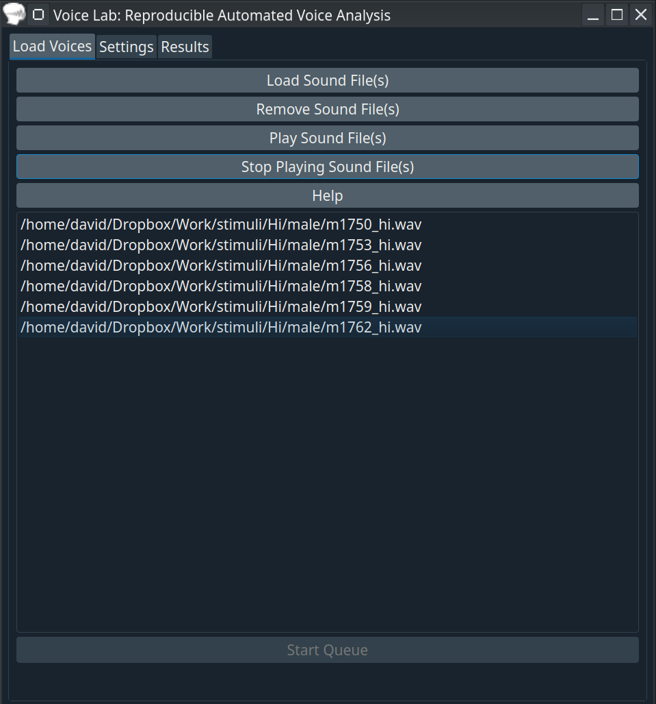
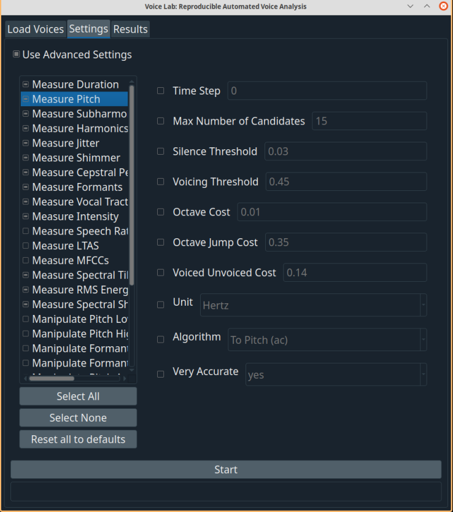
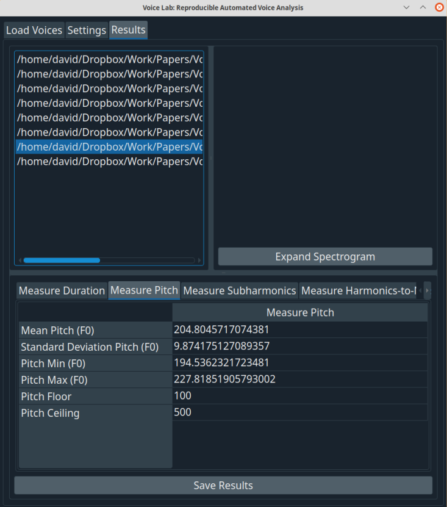
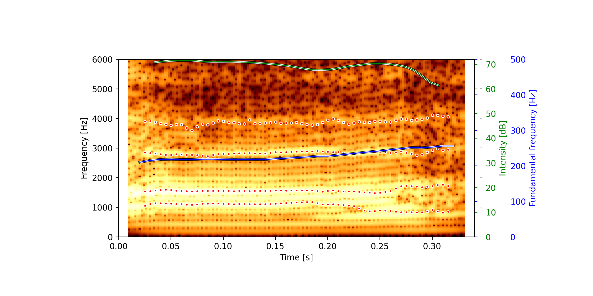
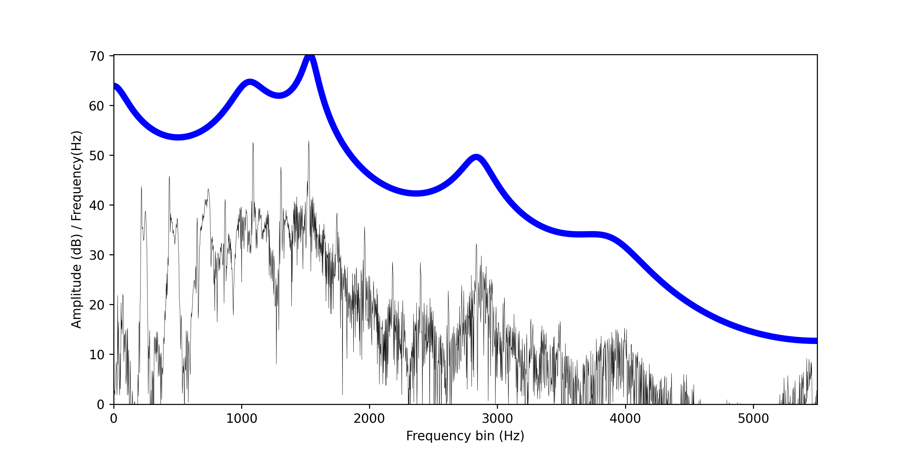

Voice Lab Interface¶
Voice Lab is an automated voice analysis software. What this software does is allow you to measure, manipulate, and visualize many voices at once, without messing with analysis parameters. You can also save all of your data, analysis parameters, manipulated voices, and full colour spectrograms with the press of one button.
Voice Lab is written in Python and relies heavily on a package called parselmouth-praat. parselmouth-praat is a Python package that essentially turns Praat’s source code written in C and C++ into a Pythonic interface. What that means is that any praat measurement in this software is using actual Praat source code, so you can trust the underlying algorithms. Voice Lab figures out all of the analysis parameters for you, but you can always use your own, and these are the same parameters as in Praat, and they do the exact same thing because it is Praat’s source code powering everything. That means if you are a beginner an expert, or anything in-between, you can use this software to automate your acoustical analyses.
All of the code is open source and available on our GitHub repository, so if this manual isn’t in-depth enough, and you want to see exactly what’s going on, go for it. It is under the MIT license, so you are free to do what you like with the software as long as you give us credit. For more info on that license, see here.
Load Voices Tab¶
{kind=link}
Load Sound File¶
Press this button to load sound files. You can load as many files as you like. At the moment, Voice Lab processes the following file types:
wav
mp3
aiff
ogg
aifc
au
nist
flac
Remove Sound File¶
Use this button to remove the selected sound file(s) from the list.
Start¶
Pressing this begins analysis. If you want to run the default analysis, press this button. If you want to select different analyses or adjust analysis parameters, go to the ‘Settings’ tab and press the ‘Advanced Settings’ button. Only the files selected (in blue) will be analyzed. By default we will select all files.
Settings Tab¶
{kind=link}
To choose different analyses, select the Use Advanced Settings checkbox. From here, you’ll be given the option to select different analyses. You can also change any analysis parameters. If you do change analysis parameters, make sure you know what you are doing, and remember that those same analysis parameters will be used on all voice files that are selected. If you don’t alter these parameters, we determine analysis parameters automatically for you, so they are tailored for each voice to give the best measurements.
Save Results¶
Save Results saves two xlsx files. One is the results.xlsx file and one is the settings.xlsx file. Here you can choose the directory you want to save the files into. You don’t have to click on a file, just go to the directory and press the button.
results.xlsx¶
The results file saves all of the voice measurements that you made. Each measurement gets a separate tab in the xlsx file.
settings.xlsx¶
This file saves all of the parameters used in each measurement. Each measurement gets a separate tab in the xlsx file. This is great if you want to know what happened. It can also accompany a manuscript or paper to help others replicate analyses.
Results Tab¶
{kind=link}
This is where you can view results. You can select each voice file on the left and view each measurement result on the bottom frame. You can also view your spectrograms in the spectrogram window. You can change the size of any of these frames in order to see things better. Press Save Results to save data. All data (results & settings), manipulated voices, and spectrograms are saved automatically when this button is pressed. All you have to do is choose which folder to save into. Don’t worry about picking file names, Voice Lab will make those automatically for you.
Output formats¶
All data files are saved as xlsx
All sound files are saved as wav
All image files are saved as png
Documentation and API Reference¶
This API is not yet complete. It is a work in progress. But, for now, there’s enough for you to run any node as long
as you can understand the code. Reproducing Voicelab’s exact behaviour in the command line is a bit more difficult as
there is a state dictionary and and end() method for some nodes.
All nodes can be imported and run without the VoiceLab GUI if you program their execution in Python.
You’ll need to supply: args['file_path'], which is the file path, and
args['voice'], which is the parselmouth.Sound object created by running
parselmouth.Sound(args['file_path']). You may also set additional parameters by creating an
instance of a node, and setting the dictionary args to the appropriate values as specified
in each node. The output of each node is a dictionary of the results. If the node is a manipulation
node, it will return a parselmouth.Sound object. If the node is a plot, it will return a matplotlib figure.
Otherwise, it will return mixed types of floats, integers, strings, and lists in the dictionary.
Validation analyses for automatic analysis settings and Energy can be found `here<https://osf.io/3wr6k/files/>`_.
Automated Settings¶
VoiceLab uses automated settings for pitch floor and ceiling, and also uses these to set the centre frequency parameter in the FormantPath formant analysis.
Automated pitch floor and ceiling parameters¶
Praat suggests adjusting pitch settings based on gender . It’s not gender per se that is important, but the pitch of voice. To mitigate this, VoiceLab first casts a wide net in floor and ceiling settings to learn the range of probable fundamental frequencies is a voice. Then it remeasures the voice pitch using different settings for higher and lower pitched voices. VoiceLab by default uses employs very accurate. VoiceLab returns minimum pitch, maximum pitch, mean pitch, and standard deviation of pitch. By default VoiceLab uses autocorrelation for Measuring Pitch, and cross-correlation for harmonicity, Jitter, and Shimmer,
Measurement Nodes¶
Measure Pitch¶
- This measures voice pitch or fundamental frequency. Users can measure pitch using any number of the following algorithms:
Praat Autocorrelation
Praat Cross Correlation
Yin (From Librosa)
Subharmonics (from Open Sauce)
By default it will measure all of these.
This uses Praat’s Sound: To Pitch (ac)..., by default. You can also use the cross-correlation algorithm: Sound: To Pitch (cc).... For full details on these algorithms, see the praat manual pitch page.
Measure Pitch returns the following measurements:
A list of the pitch values
Minimum Pitch
Maximum Pitch
Mean Pitch
Standard Deviation of Pitch
Pitch Floor (used to set window length)
Pitch Ceiling (no candidates above this value will be considered)
We use the automated pitch floor and ceiling parameters described here.
Measure Pitch Yin¶
This is the Yin implementation from Librosa. This is now run out of the Measure Pitch Node.
- class Voicelab.toolkits.Voicelab.MeasurePitchNode.MeasurePitchNode(*args, **kwargs)¶
- self.args: dict
Dictionary of arguments for the node.
- self.args{‘Time Step’} (float):
Hop length in seconds. 0 is praat’s default, 0.75 / (pitch floor)
- self.args{‘Max Number of Candidates’} (float)
The maximum number of pitch candidates to be considered
- self.args{“Silence Threshold”} (float)
frames that do not contain amplitudes above this threshold (relative to the global maximum amplitude), are probably silent.
- self.args{‘Voicing Threshold’} (float)
the strength of the unvoiced candidate, relative to the maximum possible autocorrelation. To increase the number of unvoiced decisions, increase this value.
- self.args{‘Octave Cost’} (float)
degree of favouring of high-frequency candidates, relative to the maximum possible autocorrelation. This is necessary because even (or: especially) in the case of a perfectly periodic signal, all undertones of F0 are equally strong candidates as F0 itself. To more strongly favour recruitment of high-frequency candidates, increase this value.
- self.args{“Octave Jump Cost”} (float)
degree of disfavouring of pitch changes, relative to the maximum possible autocorrelation. To decrease the number of large frequency jumps, increase this value. In contrast with what is described in the article, this value will be corrected for the time step: multiply by 0.01 s / TimeStep to get the value in the way it is used in the formulas in the article.
- self.args{‘Vocied Unvoiced Cost’} (float)
degree of disfavouring of voiced/unvoiced transitions, relative to the maximum possible autocorrelation. To decrease the number of voiced/unvoiced transitions, increase this value. In contrast with what is described in the article, this value will be corrected for the time step: multiply by 0.01 s / TimeStep to get the value in the way it is used in the formulas in the article.
- self.args{‘Unit’} (str)
The unit for pitch. Choices are “Hertz”,”Hertz (Logarithmic)”, “mel”, “logHertz”, “semitones re 1 Hz”, “semitones re 100 Hz”, “semitones re 200 Hz”, “semitones re 440 Hz”, “ERB”
- self.args{‘Algorithm} (str)
Either Autocorrelation or Cross Correlation
- self.args{“Very Accurate”} (str)
No uses 3 pitch periods. Yes uses 6 pitch periods.
Use minF0 and maxF0 to set the range of frequencies to search for. Values supplied above. None of the other arguments are used.
- process()¶
The process function is the heart of VoiceLab. It is where all the processing is done. The process function takes in a single argument, which is an object that contains all the input data for this process (the input object). This function should return a dictionary, if it works, or a string with an error message if it does not.
- Parameters
self – Used to Access the attributes and methods of the class in python.
- Returns
A dictionary with the following keys:
- ’Pitches’ (list of floats)
List of pitch values.
- ’Mean Pitch (F0)’ (float)
Mean pitch value in Hz.
- ’Standard Deviation (F0)’ (float)
Standard deviation of pitch values in Hz.
- ’Minimum Pitch (F0)’ (float)
Minimum pitch value in Hz.
- ’Maximum Pitch (F0)’ (float)
Maximum pitch value in Hz.
- ’Pitch Floor’ (float)
Pitch floor used in manipulation.
- ’Pitch Ceiling’ (float)
Pitch ceiling used in manipulation.
- Voicelab.toolkits.Voicelab.MeasurePitchNode.measure_pitch_praat(file_path: str, floor: Union[float, int] = 50, ceiling: Union[float, int] = 500, method: str = 'ac', time_step: Union[float, int] = 0.0, max_number_of_candidates: int = 15, silence_threshold: Union[float, int] = 0.03, voicing_threshold: Union[float, int] = 0.45, octave_cost: Union[float, int] = 0.01, octave_jump_cost: Union[float, int] = 0.35, voiced_unvoiced_cost: Union[float, int] = 0.14, unit: str = 'Hertz', very_accurate: str = 'no') Tuple[float, List[float], float, float, float, float, float]¶
:param file_path:The path to the audio file to be analyzed. :type file_path: str :param floor: The lowest pitch to be considered. :type floor: int, float :param ceiling: The highest pitch to be considered. :type ceiling: int, float :param method: The algorithm used to find the pitch (autocorrelation or cross correlation). :type method: str :param time_step: The time step used to find the pitch. :type time_step: float :param max_number_of_candidates: The maximum number of pitch candidates to be considered. :type max_number_of_candidates: int :param silence_threshold: The threshold used to determine if a frame is silent. :type silence_threshold: float :param voicing_threshold: The threshold used to determine if a frame is voiced. :type voicing_threshold: float :param octave_cost: degree of favouring of high-frequency candidates, relative to the maximum possible autocorrelation :type octave_cost: float :param octave_jump_cost: degree of disfavouring of pitch changes, relative to the maximum possible autocorrelation :type octave_jump_cost: float :param voiced_unvoiced_cost: degree of disfavouring of unvoiced frames :type voiced_unvoiced_cost: float :param unit: The unit of the pitch. The choices are:
Hertz
Hertz (Logarithmic)
mel
logHertz
semitones re 1 Hz
semitones re 100 Hz
semitones re 200 Hz
semitones re 440 Hz
ERB
- Parameters
very_accurate (str) – very_accurate is a boolean value that determines if the algorithm used 3 pitch periods or 6. 6 are used if the value is yes.
- Returns
pitch: (parselmouth.Data) - parselmouth pitch object
mean_f0: (float) - The mean pitch
std_f0: (float) - The standard deviation of the pitch
min_f0: (float) - The minimum pitch
max_f0: (float) - The maximum pitch
Measure Subharmonics¶
This measures subharmonic pitch and subharmonic to harmonic ratio. Subharmonic to harmonic ratio and Subharmonic pitch are measures from Open Sauce (Yu et al., 2019), a Python port of Voice Sauce (Shue et al., 2011). These measurements do not use any Praat or Parselmouth code. As in (Shue et al., 2011) and (Yu et al., 2019), subharmonic raw values are padded with NaN values to 201 data points.
- class Voicelab.toolkits.Voicelab.MeasureSHRPNode.MeasureSHRPNode(*args, **kwargs)¶
- process(filename=None, *args, **kwargs)¶
Returns subharmonic-to-harmonic ratio and Pitch from Subharmonics.
- Voicelab.toolkits.Voicelab.MeasureSHRPNode.compute_shr(log_spectrum, min_bin, startpos, endpos, lowerbound, upperbound, n, shift_units, shr_threshold)¶
“compute subharmonic-to-harmonic ratio for a short-term signal”
returns peak_index = -1 if frame appears to be unvoiced.
- Voicelab.toolkits.Voicelab.MeasureSHRPNode.ethreshold(frames)¶
Determine energy threshold for silence.
- Voicelab.toolkits.Voicelab.MeasureSHRPNode.round_half_away_from_zero(x)¶
Rounds a number according to round half away from zero method Args:
x - number [float]
- Returns:
q - rounded number [integer]
- For example:
round_half_away_from_zero(3.5) = 4 round_half_away_from_zero(3.2) = 3 round_half_away_from_zero(-2.7) = -3 round_half_away_from_zero(-4.3) = -4
The reason for writing our own rounding function is that NumPy uses the round-half-to-even method. There is a Python round() function, but it doesn’t work on NumPy vectors. So we wrote our own round-half-away-from-zero method here.
- Voicelab.toolkits.Voicelab.MeasureSHRPNode.shr_pitch(wav_data, fps, window_length=None, frame_shift=1, min_pitch=50, max_pitch=500, shr_threshold=None, frame_precision=1, datalen=None)¶
Return a list of Subharmonic ratios and F0 values computed from wav_data.
wav_data a vector of data read from a wav file fps frames rate of the wav file windows_length width of analysis window frame_shift distance to move window for each analysis iteration min_pitch minimum pitch in Hz used in SHR estimation max_pitch maximum pitch in Hz used in SHR estimation shr_threshold subharmonic-to-harmonic ratio threshold in the range of
[0,1]. If the estimated SHR is greater than the threshold, the subharmonic is regarded as F0 candidate. Otherwise, the harmonic is favored.
- frame_precision maximum number of frames the time alignment can be off
by when selecting values for output
- datalen the number of values in the output vector; leftover
input data is dropped, and the vector is padded with NaNs when no input data corresponds to the output frame time.
- Voicelab.toolkits.Voicelab.MeasureSHRPNode.shrp(Y, Fs, F0MinMax=[50, 500], frame_length=40, timestep=10, SHR_Threshold=0.4, ceiling=1250, med_smooth=0, CHECK_VOICING=0)¶
Return pitches for list of samples using subharmonic-to-harmonic ratio.
Given:
Y input data Fs sampling frequency (e.g.: 16000 Hz) F0MinMax tuple [minf0 maxf0]; default: [50 550]
- quick solutions:
for male speech: [50 250] for female speech: [120 400]
frame_length length of each frame in milliseconds (default: 40 ms) TimeStep interval for updating short-term analysis in
millisecond (default: 10 ms)
- SHR_Threshold subharmonic-to-harmonic ratio threshold in the range of
[0,1] (default: 0.4). If the estimated SHR is greater than the threshold, the subharmonic is regarded as F0 candidate. Otherwise, the harmonic is favored.
- Ceiling upper bound of the frequencies that are used for
estimating pitch. (default: 1250 Hz)
- med_smooth the order of the median smoothing (default: 0 - no
smoothing)
CHECK_VOICING NOT IMPLEMENTED
Return:
f0_time: an array of the times for the F0 points f0_value: an array of the F0 values SHR: an array of the subharmonic-to-harmonic ratio for each
frame
- f0_candidates: a matrix of the f0 candidates for each frame.
Currently two f0 values generated for each frame. Each row (a frame) contains two values in increasing order, i.e., [low_f0 higher_f0]. For SHR=0, the first f0 is 0. The purpose of this is that when you want to test different SHR thresholds, you don’t need to re-run the whole algorithm. You can choose to select the lower or higher value based on the shr value of this frame.
- Voicelab.toolkits.Voicelab.MeasureSHRPNode.two_max(x, lowerbound, upperbound, unit_len)¶
Return up to two successive maximum peaks and their indices in x.
Return the magnitudes of the peaks and the indices as two lists. If the first maximum is less than zero, just return it. Otherwise look to the right of the first maximum, and if there is a second maximum that is greater than zero, add that to the returned lists.
lowerbound and upperbound comprise a closed interval, unlike the normal python half closed interval. [RDM XXX: fix this?]
- Voicelab.toolkits.Voicelab.MeasureSHRPNode.wavread(fn)¶
Read in a 16-bit integer PCM WAV file for processing
- Args:
fn - filename of WAV file [string]
- Returns:
y_float - Audio samples in float format [NumPy vector] y_int - Audio samples in int format [NumPy vector]
fs - Sampling frequency in Hz [integer]
Emulate the parts of the Matlab wavread function that we need.
Matlab’s wavread is used by voicesauce to read in the wav files for processing. As a consequence, all the translated algorithms assume the data from the wav file is in matlab form, which in this case means a double precision float between -1 and 1. The corresponding scipy function returns the actual integer PCM values from the file, which range between -32768 and 32767. (matlab’s wavread can return the integers, but does not by default and voicesauce uses the default). Consequently, after reading the data using scipy’s io.wavfile, we convert to float by dividing each integer by 32768.
Also, save the 16-bit integer data in another NumPy vector.
The input WAV file is assumed to be in 16-bit integer PCM format.
- Voicelab.toolkits.Voicelab.MeasureSHRPNode.window(width, window_type, beta=None)¶
Generate a window function (1 dim ndarray) of length width.
Given a window_type from the list ‘rectangular’, ‘triangular’, ‘hanning’, ‘hamming’, ‘blackman’, ‘kaiser’, or at least the first four characters of one of those strings, return a 1 dimensional ndarray of floats expressing a window function of length ‘width’ using the ‘window_type’. ‘beta’ is an additional input for the kaiser algorithm. (XXX: kaiser is not currently implemented.)
Measure CPP (Cepstral Peak Prominence)¶
This measures Cepstral Peak Prominance in Praat. You can adjust interpolation, qeufrency upper and lower bounds, line type, and fit method.
- class Voicelab.toolkits.Voicelab.MeasureCPPNode.MeasureCPPNode(*args, **kwargs)¶
Measure Cepstral Peak Prominance (CPP) of a sound file.
- self.args: dict
Dictionary of arguments for the node.
- self.args[“interpolation]”: str, default=”Parabolic”
Interpolation method to use.
- self.args[“Tilt line qeufrency lower bound”]: Union[float,str], default=0.001
line qeufrency lower bound
- self.args[“Tilt line qeufrency upper bound”]: Union[float, int], default=0.0
line qeufrency upper bound; 0 means the entire range
- self.args[“Line type”]: str, default=”Straight”
Line type to use.
- self.args[“Fit method”]: str, default=”Robust”
Fit method to use.
- process()¶
Measure Cepstral Peak Prominance (CPP) of a sound file.
- Returns
A dictionary containing the CPP value or an error message.
- Return type
dict of str|union[float,str]]
Measure Duration¶
This measures the full duration of the sound file. There are no parameters to adjust.
Measure Energy¶
This is my port of VoiceSauce’s Energy Algorithm. It is different than the old RMS Energy algorithm in previous versions of VoiceLab. This code is not in OpenSauce.
- class Voicelab.toolkits.Voicelab.MeasureEnergyNode.MeasureEnergyNode(*args, **kwargs)¶
Measure Energy like in VoiceSauce
- self.args: dict
Dictionary of arguments for the node.
- self.args[“pitch algorithm]”: str, default=”Praat”
Pitch method to use. Only Praat is available at the moment
- self.args[“start”]: float, default=0.0
Time in seconds to start the analysis
- self.args[“end”]: float, default=0.0
Time in seconds to end the analysis
- self.args[“number of periods”]: int, default=5
Number of pitch periods to use for the analysis
- self.args[‘frameshift’]: int, default=1
Number of ms to shift between frames
- self.args[‘fmin’]: int, default=40
Minimum frequency to use for the analysis. Here we use values from VoiceSauce, not from VoiceLab’s automatic settings in order to replicate the algorthm used in VoiceSauce.
- self.args[‘fmax’]: int, default=500
Maximum frequency to use for the analysis. Here we use values from VoiceSauce, not from VoiceLab’s automatic settings in order to replicate the algorthm used in VoiceSauce.
- process()¶
Get energy of a signal using Algorithm from Voice Sauce ported to Python.
- Returns
dictionary with energy values, mean energy, and RMS energy from Praat or error messages
- Return type
- Dictionary with the following values:
- str | Union[list of Union[float, int], str]
energy values or error message
- str | Union[float, int, str]
mean energy or error message
- str | Union[float, int, str]
RMS energy from Praat or error message
- Voicelab.toolkits.Voicelab.MeasureEnergyNode.get_energy_voice_sauce(audio_file_path: str) Union[numpy.array, str]¶
Get energy from Voice Sauce formula
- Parameters
audio_file_path (str) – path to audio file
- Returns
energy: Energy values or error message
- Return type
Union[np.array, str]
- Voicelab.toolkits.Voicelab.MeasureEnergyNode.get_raw_pitch(audio_file_path: str) tuple[pandas.core.frame.DataFrame, pandas.core.frame.DataFrame]¶
Get raw pitch from Praat. This is used to set the window length for the energy calculation.
- Argument
audio_file_path: path to the audio file
- Type
str
- Returns
time, f0
- Return type
tuple[pd.DataFrame, pd.DataFrame]
- Voicelab.toolkits.Voicelab.MeasureEnergyNode.refine_pitch_voice_sauce(times: pandas.core.frame.DataFrame, frequencies: pandas.core.frame.DataFrame) numpy.array¶
Refine praat Pitch to remove undefined values, and interpolate values to match our time step.
- Argument
times: np.array
- Type
times: np.array
- Argument
frequencies: np.array
- Type
frequencies: np.array
- Returns
f0: refined fundamental frequency values
- Return type
np.array
- Voicelab.toolkits.Voicelab.MeasureEnergyNode.round_half_away_from_zero(x) numpy.int64¶
Rounds a number according to round half away from zero method
- Parameters
x (Union[float, int]) – number to round
- Returns
rounded number
- Return type
- For example:
round_half_away_from_zero(3.5) = 4
round_half_away_from_zero(3.2) = 3
round_half_away_from_zero(-2.7) = -3
round_half_away_from_zero(-4.3) = -4
The reason for writing our own rounding function is that NumPy uses the round-half-to-even method. There is a Python round() function, but it doesn’t work on NumPy vectors. So we wrote our own round-half-away-from-zero method here.
Measure Formants¶
This returns the mean of the first 4 formant frequencies of the voice using the To FormantPath algorithm using
5.5 maximum number of formants and a variable centre frequency, set automatically or user-specified. All other values
are Praat defaults for Formant Path. Formant path picks the best formant ceiling value by fitting each prediction to a
polynomial curve, and choosing the best fit for each formant. The centre frequency is determined in the automatic
settings You can also use your own settings for To Formant Burg... if you want to.
- class Voicelab.toolkits.Voicelab.MeasureFormantNode.MeasureFormantNode(*args, **kwargs)¶
Measure formant frequencies using Praat’s Formant Path Function.
- self.argsdict
Arguments for the node self.args[‘time step’] : Union[float, int], default=0.0025
Time step in seconds
- self.args[‘max number of formants’]Union[float, int], default=5.5
Maximum number of formants is used to set the number of poles in the LPC filter. The number of poles is 2x this number.
- self.args[‘window length’]bool, default=True
Normalize amplitude to 70 dB RMS
- self.args[‘pre-emphasis’]: Union[float, int], default=50
Pre-emphasis filter coefficient: the frequency F above which the spectral slope will increase by 6 dB/octave.
- self.args[‘max_formant (To Formant Burg…)’]: Union[float, int], default=5500
Maximum formant frequency in Hz. This is the nyquist frequency for resampling prior to LPC analysis. Sounds will be resampled to 2x this number. This is for the Formant Burg analysis, a fallback in-case Formant Path fails or is not selected.
- self.args[“Center Formant (Formant Path)”]: Union[float, int], default=5500
This is the centre frequency for the Formant Path analysis. This is the nyquist frequency for resampling prior to LPC analysis. Sounds will be resampled to 2x this number. Formant Path will measure formants using this value and several others, depending on the number of steps and ceiling step size.
- self.args[“Ceiling Step Size (Formant Path)”]: Union[float, int], default=0.05
This is the size of steps in the Formant Path analysis. This is the nyquist frequency for resampling prior to LPC analysis. Sounds will be resampled to 2x this number. Praat will measure formants at a number of steps up and down of this size.
- self.args[“Number of Steps (Formant Path)”]: Union[float, int], default=4
This is the number of steps in the Formant Path analysis. This is the nyquist frequency for resampling prior to LPC analysis. This is the number of formant analyses to perform.
- self.args[‘method’]: str, default=’Formant Path’
Method to use for formant measurement. Options are: Formant Path or Formant Burg.
- end(results)¶
This passes the data on to State for post-processing of VTL estimates
- Returns
results: a dictionary of the results containing the output from process()
- Return type
dict
- measure_formants_burg(filename, time_step, max_number_of_formants, max_formant, window_length, pre_emphasis)¶
This function measures the formants using the formant_burg method
- Parameters
filename – the name of the file to measure
time_step – the time step to use for the analysis
max_number_of_formants – the maximum number of formants to measure
max_formant – the maximum formant to measure
window_length – the window length to use for the analysis
pre_emphasis – the pre-emphasis to use for the analysis
- Type
filename: str
- Type
time_step: float
- Type
max_number_of_formants: int
- Type
max_formant: float
- Type
window_length: float
- Type
pre_emphasis: float
- Return formant_object
a praat formant object
- Return type
parselmouth.Formant
- process()¶
Returns the means and medians of the 1st 4 formants, and the Praat formant object for use in VTL estimates and plots.
- Returns
The max formant value
- Return type
int
- Voicelab.toolkits.Voicelab.MeasureFormantNode.get_values_function(object, fn, command)¶
This function returns the values of a function from a praat formant object. This is used to make a vectorized NumPy function to reduce nested loops.
- Parameters
object – the praat formant object
fn – the function to return
command – the command to use to get the values
- Type
object: parselmouth.Formant
- Type
fn: function
- Type
command: str
- Returns
values: individual formant values
- Return type
Union[float, int]
Measure Vocal Tract Length Estimates¶
This returns the following vocal tract length estimates:
Average Formant¶
This calculates the mean \(\frac {\sum _{i=1}^{n} {f_i}}{n}\) of the first four formant frequencies for each sound.
Pisanski, K., & Rendall, D. (2011). The prioritization of voice fundamental frequency or formants in listeners’ assessments of speaker size, masculinity, and attractiveness. The Journal of the Acoustical Society of America, 129(4), 2201-2212.
Principle Components Analysis¶
This returns the first factor from a Principle Components Analysis (PCA) of the 4 formants.
Babel, M., McGuire, G., & King, J. (2014). Towards a more nuanced view of vocal attractiveness. PloS one, 9(2), e88616.
Geometric Mean¶
This calculates the geometric mean \(\left(\prod _{i=1}^{n}f_{i}\right)^{\frac {1}{n}}\) of the first 4 formant frequencies for each sound.
Smith, D. R., & Patterson, R. D. (2005). The interaction of glottal-pulse rate andvocal-tract length in judgements of speaker size, sex, and age.Journal of theAcoustical Society of America, 118, 3177e3186.
Formant Dispersion¶
\(\frac {\sum _{i=2}^{n} {f_i - f_{i-1}}}{n}\)
Fitch, W. T. (1997). Vocal-tract length and formant frequency dispersion correlate with body size in rhesus macaques.Journal of the Acoustical Society of America,102,1213e1222.
VTL¶
\(\frac {\sum _{i=1}^{n} (2n-1) \frac {f_i}{4c}}{n}\)
Fitch, W. T. (1997). Vocal-tract length and formant frequency dispersion correlate with body size in rhesus macaques.Journal of the Acoustical Society of America,102,1213e1222.
Titze, I. R. (1994).Principles of voice production. Englewood Cliffs, NJ: Prentice Hall.
VTL Δf¶
\(f_i\) = The slope of 0 intercept regression between \(F_i = \frac {(2i-1)}{2} Δf\) and the mean of each of the first 4 formant frequencies.
\(VTL f_i = \frac {\sum _{i=1}^{n} (2n-1)(\frac {c}{4f_i})}{n}\)
\(VTL \Delta f = \frac {c}{2Δf}\)
Reby,D.,&McComb,K.(2003).Anatomical constraints generate honesty: acoustic cues to age and weight in the roars of red deer stags. Animal Behaviour, 65,519e530.
Measure Formant Positions Node¶
This node measures formant position. This node is executed by MeasureVocalTractEstimatesNode.
Formant Position is set to only run on samples of 30 or greater because this measure is based on scaling the data. Without a large enough sample, this measurement could be suspicious.
- The algorithm is as follows:
First, measure formants at each gottal pulse.
Second, scale each formant separately.
Third, find the mean of the scaled formants.
\(\frac{1}{n} {\sum _{i=1}^{n}{f_i}}\)
This algorithm deviates from the original in that it checks the data for a normal distribution before applying the z-score. If it is not normally distributed, it uses Scikit Learn’s Robust Scalar The scalar method is recorded in the voicelab_settings.xlsx file.
Puts, D. A., Apicella, C. L., & Cárdenas, R. A. (2011). Masculine voices signal men’s threat potential in forager and industrial societies. Proceedings of the Royal Society B: Biological Sciences, 279(1728), 601-609.
- class Voicelab.toolkits.Voicelab.MeasureVocalTractEstimatesNode.MeasureVocalTractEstimatesNode(*args, **kwargs)¶
Measure Voice Tract Estimates Node
- self.args: dict
Dictionary of arguments passed to the node self.args[“Measure Formant PCA”]: bool
Whether to measure the formant PCA
- self.args[“Measure Formant Positions”]: bool
Whether to measure the formant positions
- self.args[“Measure Formant Dispersion”]: bool
Whether to measure the formant dispersion
- self.args[“Measure Average Formant”]: bool
Whether to measure the average formant
- self.args[“Measure Geometric Mean”]: bool
Whether to measure the geometric mean
- self.args[“Measure Fitch VTL”]: bool
Whether to measure Fitch VTL
- self.args[“Measure Delta F”]: bool
Whether to measure Delta F
- self.args[“Measure VTL Delta F”]: bool
Whether to measure VTL Delta F
- self.state: dict
Dictionary of state variables passed to the node. This includes the mean formants measured by MeasureFormantsNode.
- end(results)¶
This node does all of the vocal tract length calculations. To employ this code outside of the VoiceLab GUI, you’ll need to supply a state dictionary with 4 keys:
self.state[“f1 means”]
self.state[“f2 means”]
self.state[“f3 means”]
self.state[“f4 means”]
In the GUI, these are supplied via self (ie they are instance attributes).
Each of those values should be a list of the formant means for each file.
You’ll also need to supply a dictionary of the arguments to the node. The keys are set in the process() method in the GUI, but you can set them on your own. They are as follows:
“Measure Formant PCA”: True
“Measure Formant Positions”: True
“Measure Formant Dispersion”: True
“Measure Average Formant”: True
“Measure Geometric Mean”: True
“Measure Fitch VTL”: True
“Measure Delta F”: True
“Measure VTL Delta F”: True
As of now, all measurements except Formant Positions are calculated in this function (I know, I know). Formant Positions are calculated in the FormantPositionsNode, and is documented here.
- Parameters
results (dict) – The results of the pipeline run.
- Returns
The selected vocal-tract-length estimates or an error message, or note that some measurements were not selected.
- Return type
dict of Union[float, str]
- get_average_formant(f1: Union[float, int], f2: Union[float, int], f3: Union[float, int], f4: Union[float, int]) float¶
Get the average formant from F1, F2, F3, and F4.
- Parameters
f1 (Union[float, int]) – The first formant in Hz
f2 (Union[float, int]) – The second formant in Hz
f3 (Union[float, int]) – The third formant in Hz
f4 (Union[float, int]) – The fourth formant in Hz
- Returns
The average formant
- Return type
float
- get_delta_f(f1: float | int, f2: float | int, f3: float | int, f4: float | int) float¶
Get the delta f from the formants.
- Parameters
f1 (Union[float, int]) – The first formant in Hz
f2 (Union[float, int]) – The second formant in Hz
f3 (Union[float, int]) – The third formant in Hz
f4 (Union[float, int]) – The fourth formant in Hz
- Return delta_f
The delta f
- Rtype delta_f
float
- get_fitch_vtl(f1, f2, f3, f4)¶
Get Fitch VTL from the formants. :argument f1: The first formant in Hz :type f1: Union[float, int] :argument f2: The second formant in Hz :type f2: Union[float, int] :argument f3: The third formant in Hz :type f3: Union[float, int] :argument f4: The fourth formant in Hz :type f4: Union[float, int] :return: The Fitch VTL :rtype: float
- get_formant_dispersion(f1: Union[float, int], f4: Union[float, int], *args, **kwargs) float¶
Get the formant dispersion from F1 and F4. Since F2 and F3 cancel each other out in the equation, we save time and memeory and only ask for the 2 formants. args and kwargs are there in case people add F2 and F3 so it doesn’t crash
- Parameters
f1 (Union[float, int]) – The first formant in Hz
f4 (Union[float, int]) – The fourth formant in Hz
- Returns
The formant dispersion
- Return type
float
- get_formants_pca()¶
Get the formants from the PCA. :return: The formants :rtype: list
- get_geometric_mean(f1: float | int, f2: float | int, f3: float | int, f4: float | int) float¶
Get the geometric mean of the formants.
- Parameters
f1 (float | int) – The first formant in Hz
f2 (float | int) – The second formant in Hz
f3 (float | int) – The third formant in Hz
f4 (float | int) – The fourth formant in Hz
- Returns
The geometric mean of the formants
- Return type
float
- get_vtl_delta_f(f1: float, f2: float, f3: float, f4: float) float¶
Get the VTL delta f from the formants. :argument f1: The first formant in Hz :type f1: Union[float, int] :argument f2: The second formant in Hz :type f2: Union[float, int] :argument f3: The third formant in Hz :type f3: Union[float, int] :argument f4: The fourth formant in Hz :type f4: Union[float, int] :return delta_f: The delta f :rtype delta_f: float
- process()¶
Estimate Vocal Tract Length using several methods The process node runs on each sound file in the pipeline run, and passes the data on to state for processing in the end() method run.
- Returns
A dictionary of the results or an error message. The number of varaibles returned depends on the arguments passed to the node.
- Return type
dict[str, Union[float, str]
- class Voicelab.toolkits.Voicelab.MeasureFormantPositionsNode.MeasureFormantPositionsNode(*args, **kwargs)¶
Measure Formnat Positions Node. This measures formant frequency position. This code is called from the MeasureVocalTractEstimatesNode. It’s recommended you use that node to access this code.
- calculate_formant_position(formant_mean_lists)¶
Calculate the formant position for each voice.
- Parameters
formant_mean_lists (list) – List of lists of formant means.
- Returns
Formant position and normalization type.
- Return type
tuple of (Union[float, str, list, np.ndarray], str)
- end(results)¶
- Args:
results:
- process()¶
This runs the formant position measurement on each file. Results are passed to the end() method where they are sent to the Data Model.
- Return results
A dictionary of results for each file.
- Rtype results
dict
Measure Harmonicity¶
This measures mean harmonics-to-noise-ratio using automatic floor and ceiling settings described here. Full details of the algorithm can be found in the `Praat Manual Harmonicity Page<http://www.fon.hum.uva.nl/praat/manual/Harmonicity.html>`_. By default Voice Lab use To Harmonicity (cc)... You can select To Harmonicity (ac) or change any other Praat parameters if you wish.
- class Voicelab.toolkits.Voicelab.MeasureHarmonicityNode.MeasureHarmonicityNode(*args, **kwargs)¶
Measure the harmonics-to-noise ratio of a sound. This is effetively the Signal-to-Noise Ratio (SNR) of a periodic sound.
- self.args: dict
Dictionary of arguments for the node. self.args[‘Algorithm’] : str, default=To Harmonicity (cc)’
Which pitch algorithm to use. Default is Cross Correlation, alternate is Auto Correlation.
- self.args[‘Timestep’]float, default 0.01
The timestep (hop length/time between windows) to use for the analysis.
- self.args[“Silence Threshold”]: float, default=0.1,
The threshold below which a frame is considered silent.
- self.args[“Periods per Window”]: float, default=4.5,
The number of periods per window.
- process()¶
This function measures Harmonics to Noise Ratio
- Returns
A dictionary of the results or an error message.
- Return type
dict[str, Union[str, float]]
Measure Intensity¶
This returns the mean of Praat’s Sound: To Intensity... function in dB. You can adjust the minimum pitch parameter. For more information, see Praat
s Configuring the intensity contour Page.
- class Voicelab.toolkits.Voicelab.MeasureIntensityNode.MeasureIntensityNode(*args, **kwargs)¶
Measure Intensity (dB) of sound Arguments:
- self.args: dict of arguments
These are the Intensity options from Praat: minimum_pitch Union[float, int], default 100.0
The minimum pitch for the analysis. This sets the analysis window to 0.8 / minimum pitch
- time step: float, default 0.0 (Automatic)
The time step (hop length) for the analysis
- Subtract Mean: bool, default True
Subtract the mean intensity from the intensity
- process()¶
Run the intensity analysis
- Parameters
self.args['file_path'] (str) – the path to the file to be analysed
- Returns
dict of results
- Return type
dict[str, Union[int, float, str, list]]
Measure Jitter¶
This measures and returns values of all of Praat’s jitter algorithms. This can be a bit overwhelming or difficult to understand which measure to use and why, or can lead to multiple colinear comparisons. To address this, by default, Voice Lab returns a the first component from a principal components analysis of those jitter algorithms taken across all selected voices. The underlying reasoning here is that each of these algorithms measures something about how noisy the voice is due to perturbations in period length. The PCA finds what is common about all of these measures of noise, and gives you a score relative to your sample. With a large enough sample, the PCA score should be a more robust measure of jitter than any single measurement. Voice Lab uses use it’s automated pitch floor and ceiling algorithm. to set analysis parameters.
Jitter Measures:
Jitter (local)
Jitter (local, absolute)
Jitter (rap)
Jitter (ppq5)
Jitter (ddp)
- class Voicelab.toolkits.Voicelab.MeasureJitterNode.MeasureJitterNode(*args, **kwargs)¶
Measure Jitter using each algorithm from Praat. Also provides an option to take a 1-factor PCA of the results.
- self.args: dict
Dictionary of arguments to be passed to the node. self.args[“file_path”]: str, default=0.0
path to the file to be analyzed
- self.args[‘start_time’]: float, default=0.0
start time of the analysis
- self.args[‘end_time’]: float, default=0.0001
end time of the analysis
- self.args[‘shortest_period’]: float
shortest period to be considered
- self.args[‘longest_period’]: float, default=0.02
longest period to be considered
- self.args[‘maximum_period_factor’]: float, default=1.3
the largest possible difference between consecutive intervals that will be used in the computation of jitter
self.args[‘Measure PCA’]: bool, default=True
- self.state: dict
- Dictionary of state variables to be passed to the node. This saves the individual jitter measurements from process(), and passes them to end() for PCA.
self.state[“local_jitter_list”]: list self.state[“localabsolute_jitter_list”]: list self.state[“rap_jitter_list”]: list self.state[“ppq5_jitter_list”]: list self.state[“ddp_jitter_list”]: list
- end(results)¶
This method calls the jitter_pca method and returns the PCA results to the main program/
- Parameters
results (dict) – dictionary of jitter measurements
- Return results
dictionary of jitter measurements
- Rtype results
dict[str, Union[float, int, str]]
- jitter_pca()¶
perform PCA on the jitter measurements
These arguments are passed into the method by self. :argument local_jitter_list: list of local jitter measurements :type local_jitter_list: list :argument localabsolute_jitter_list: list of local absolute jitter measurements :type localabsolute_jitter_list: list :argument rap_jitter_list: list of rap jitter measurements :type rap_jitter_list: list :argument ppq5_jitter_list: list of ppq5 jitter measurements :type ppq5_jitter_list: list :argument ddp_jitter_list: list of ddp jitter measurements :type ddp_jitter_list: list
- Return principal_components
list of PCA values or an error message
- Rtype principal_components
Union[list, str]
Measure Shimmer¶
This measures and returns values of all of Praat’s shimmer algorithms. This can be a bit overwhelming or difficult to understand which measure to use and why, or can lead to multiple colinear comparisons. To address this, by default, Voice Lab returns a the first component from a principal components analysis of those shimmer algorithms taken across all selected voices. The underlying reasoning here is that each of these algorithms measures something about how noisy the voice is due to perturbations in amplitude of periods. The PCA finds what is common about all of these measures of noise, and gives you a score relative to your sample. With a large enough sample, the PCA score should be a more robust measure of shimmer than any single measurement. Voice Lab uses use it’s automated pitch floor and ceiling algorithm. to set analysis parameters.
Shimmer Measures:
Shimmer (local)
Shimmer (local, dB)
Shimmer (apq3)
Shimmer (aqp5)
Shimmer (apq11)
Shimmer (ddp)
- class Voicelab.toolkits.Voicelab.MeasureShimmerNode.MeasureShimmerNode(*args, **kwargs)¶
Measure Jitter using each algorithm from Praat. Also provides an option to take a 1-factor PCA of the results.
- self.args: dict
Dictionary of arguments to be passed to the node. self.args[“file_path”]: str, default=0.0
path to the file to be analyzed
- self.args[‘start_time’]: float, default=0.0
start time of the analysis
- self.args[‘end_time’]: float, default=0.0001
end time of the analysis
- self.args[‘shortest_period’]: float
shortest period to be considered
- self.args[‘longest_period’]: float, default=0.02
longest period to be considered
- self.args[‘maximum_period_factor’]: float, default=1.3
the largest possible difference between consecutive intervals that will be used in the computation of shimmer
- self.args[‘maximum_amplitude’]: float, default=1.6
The maximum amplitude factor. Can’t find anything on this in the Praat Manual Possibly the largest possible difference between consecutive amplitudes that will be used in the computation of shimmer
self.args[‘Measure PCA’]: str, default=”Yes”
- self.state: dict
- Dictionary of state variables to be passed to the node. This saves the individual shimmer measurements from process(), and passes them to end() for PCA.
self.state[“local_shimmer_list”]: list self.state[“localdb_shimmer_list”]: list self.state[“apq3_shimmer”]: list self.state[“aqpq5_shimmer”]: list self.state[“apq11_shimmer”]: list self.state[“dda_shimmer”]: list
- end(results)¶
- Args:
results:
- process()¶
This function measures Shimmer.
Measure LTAS¶
This measures several items from the Long-Term Average Spectrum using Praat’s default settings.
mean (dB)
slope (dB)
local peak height (dB)
standard deviation (dB)
spectral tilt slope (dB/Hz)
spectral tilt intercept (dB)
You can adjust: - Pitch correction - Bandwidth - Max Frequency - Shortest and longest periods - Maximum period factor
- class Voicelab.toolkits.Voicelab.MeasureLTASNode.MeasureLTASNode(*args, **kwargs)¶
Measure frequency characteristics of a Long-Term Average Spectrum of a voice
- self.args: dict
A dictionary of settings for the LTAS measurements
- self.args[‘Pitch corrected’]: bool, default=False
It tries to compute an Ltas of the spectral envelope of the voiced parts, correcting away the influence of F0 in a way that does not sacrifice frequency selectivity. The resulting Ltas is meant to reflect only the resonances (formants) in the vocal tract and the envelope of the glottal source spectrum. https://www.fon.hum.uva.nl/praat/manual/Sound__To_Ltas__pitch-corrected____.html
- self.args[‘Bandwidth’]: Union[float, int], default=100.0
Frequency bandwidth of LTAS
- self.args[‘Maximum frequency’]: Union[float, int], default=5000.0
Sound will be resampled to 2x this value for LTAS analysis
- self.args[‘Shortest period (s)’]: Union[float, int], default=0.0001
The shortest period considered
- self.args[‘Longest period (s)’]: Union[float, int], default=0.02
The longest period considered
- self.args[‘Maximum period factor’]: Union[float, int], default=1.3
The longest difference between periods to be considered
- process()¶
Run LTAS node on a sound
- dict[str | Union[float, int, str]
Dictionary of following results or dict of error message
“LTAS Mean (dB)”: mean_dB,
“LTAS slope (dB)”: slope_dB,
“LTAS local peak height (dB)”: local_peak_height_dB,
“LTAS standard deviation (dB)”: standard_deviation_dB,
“LTAS spectral tilt slope ({slope_unit})”: slope_value,
“LTAS spectral tilt intercept ({intercept_unit})”: intercept_value,
Measure MFCC¶
This node measures the first 24 Mel Cepstral Coeffecients of the sound. There are no options to set. If you want fewer coeffecients, you can delete the one’s you don’t want. If you need the same number of values for each sound for Machine Learning, make sure the sounds are the same length before running the analysis.
- class Voicelab.toolkits.Voicelab.MeasureMFCCNode.MeasureMFCCNode(*args, **kwargs)¶
Measure 24 MFCCs of a sound
- Parameters
self.args['file_path'] (str) – the path to the file to be analysed
- Returns
dict of results
- Return type
dict[str, Union[int, float, str, list]]
- process()¶
Run the MFCC analysis
- Parameters
self.args['file_path'] (str) – the path to the file to be analysed
- Returns
dict of results
- Return type
dict[str, Union[int, float, str, list]]
Measure Spectral Shape¶
This measures spectral: - Centre of Gravity - Standard Deviation - Kurtosis - Band Energy Difference - Band Density Difference
- class Voicelab.toolkits.Voicelab.MeasureSpectralShapeNode.MeasureSpectralShapeNode(*args, **kwargs)¶
Measure characteristics of the spectral shape
- self.args: dict
A dictionary of options for the node
self.args[“Low band floor (Hz)”]: Union[float, int], default=0.0
self.args[“Low band ceiling (Hz)”]: Union[float, int], default=500.0
self.args[“High band floor (Hz)”]: Union[float, int], default=500.0
self.args[“High band ceiling (Hz)”]: Union[float, int], default=4000.0
self.args[“Power”]: 2 int, default=2
- process()¶
Run the Spectral Shape Node
- dict of str | Union[float, str]
- dictionary with the following keys:
“Centre of Gravity”: centre_of_gravity,
“Standard Deviation”: standard_deviation,
“Kurtosis”: kurtosis,
“Skewness”: skewness,
“Band Energy Difference”: band_energy_difference,
“Band Density Difference”: band_density_difference,
Measure Spectral Tilt¶
This measures spectral tilt by returning the slope of a regression between freqeuncy and amplitude of each sound. This is from a script written by Michael J. Owren, with sorting errors corrected. This is not the same equation in Voice Sauce.
Owren, M.J. GSU Praat Tools: Scripts for modifying and analyzing sounds using Praat acoustics software. Behavior Research Methods (2008) 40: 822–829. https://doi.org/10.3758/BRM.40.3.822
- class Voicelab.toolkits.Voicelab.MeasureSpectralTiltNode.MeasureSpectralTiltNode(*args, **kwargs)¶
Measure Spectral Tilt by returning the slope of zero-intercept linear regression of the power spectrum.
- Parameters
window_length_in_millisecs (str) – Window length in milliseconds
- process()¶
run the Spectral tilt measurement
- Return {“Spectral Tilt”
spectral_tilt}
:rtype dict[str|Union[float, str]]
Measure Speech Rate¶
This function is an implementation of the Praat script published here: De Jong, N.H. & Wempe, T. (2009). Praat script to detect syllable nuclei and measure speech rate automatically. Behavior research methods, 41 (2), 385 - 390.
Voice Lab used version 2 of the script, available here.
- This returns:
Number of Syllables
Number of Pauses
Duration(s)
Phonation Time(s)
Speech Rate (Number of Syllables / Duration)
Articulation Rate (Number of Syllables / Phonation Time)
Average Syllable Duration (Speaking Time / Number of Syllables)
You can adjust:
- silence threshold mindb
mimimum dip between peaks (dB)
mindip. This should be between 2-4. Try 4 for clean and filtered sounds, and lower numbers for noisier sounds.minimum pause length
minpause
This command really only words on sounds with a few syllables, since Voice Lab is measuring how fast someone speaks. For monosyllabic sounds, use the Measure Duration function.
- class Voicelab.toolkits.Voicelab.MeasureSpeechRateNode.MeasureSpeechRateNode(*args, **kwargs)¶
Measure Speech Rate using the script found here.
- self.args: dict
Dictionary of values passed into the node.
- self.args[‘silencedb’]: Union[float, int]
The threshold for silence. Decibels are relative to 90.9691 dB, so we use negative dB values.
- self.args[‘mindib’]: Union[float, int]
The minimum dip between peaks
- self.args[‘minpause’]: Union[float, int]
The minimum pause duration
- process()¶
Measure speechrate.
A dictionary with the following keys (or an error message):
- “Number of Syllables”: voicedcount
str | Union[float, int, str]
- “Number of Pauses”: npause
str | Union[float, int, str]
- “Duratrion(s)”: originaldur
str | Union[float, int, str]
- “Phonation Time(s)”: intensity_duration
str | Union[float, int, str]
- “speechrate(Number of Syllables / Duration)”: speakingrate
str | Union[float, int, str]
- “Articulation Rate(Number of Syllables / phonationtime)”: articulationrate,
str | Union[float, int, str]
- “ASD(Speaking Time / Number of Syllables)”: asd
str | Union[float, int, str]
Manipulation Nodes¶
Lower Pitch¶
This lowers pitch using the PSOLA method. By default, this lowers by 0.5 ERBs (Equivalent Rectangular Bandwidths) which is about 20 Hz at a 120 Hz pitch centre and about -/+ 25 Hz at a 240 Hz pitch centre. By default VoiceLab also normalizes intensity to 70 dB RMS, but you can turn this off by deselecting the box in the Settings tab.
- class Voicelab.toolkits.Voicelab.ManipulatePitchLowerNode.ManipulatePitchLowerNode(*args, **kwargs)¶
This node manipulates the pitch of the sound by raising it.
- args¶
The args dictionary is used to store the arguments of the node. The keys are the names of the arguments and the values are a tuple of the following format: (default value, [list of possible values]).
- Parameters
unit (str) – The unit of the pitch. Possible values are: “ERB”, “Hertz”, “mel”, “logHertz”, “semitones”.
method (str) – The method of manipulating the pitch. Possible values are: “Shift frequencies”, “Multiply frequencies”. If the method is “Shift frequencies”, the amount is in Hertz. If the methods is “Multiply frequencies”, the amount is a proportion.
amount (float) – The amount of the pitch manipulation. This should be a negative number. If you want to raise pitch, use that node instead.
time_step (float) – The time step of the pitch manipulation.
amplitude (normalize) – Whether to normalize the amplitude of the pitch manipulation.
- process()¶
The process function is the heart of the program. It is called by default when you run a sound through VoiceLab, and it is also called when you click on “Start queue” in the GUI. The process function takes in an array of arguments that are specified by whatever options you check off on the GUI or in VoiceLab’s “Manipulate Pitch Higher” menu. These arguments are added to the args dictionary in the __init__ function. The process function returns a dictionary of the results of the manipulation. This is either a parselmouth Sound object, or an error message.
- Parameters
self – Used to Access the attributes and methods of the class in python.
- Returns
A dictionary with the manipulated parselmouth.Sound object.
- Return type
dict[str, Union[parselmouth.Sound, str]]
Raise Pitch¶
This raises pitch using the PSOLA method. By default, this lowers by 0.5 ERBs (Equivalent Rectangular Bandwidths) which is about 20 Hz at a 120 Hz pitch centre and about -/+ 25 Hz at a 240 Hz pitch centre. By default VoiceLab also normalizes intensity to 70 dB RMS, but you can turn this off by deselecting the box in the Settings tab.
- class Voicelab.toolkits.Voicelab.ManipulatePitchHigherNode.ManipulatePitchHigherNode(*args, **kwargs)¶
Manipulate pitch higher node.
- args: dict[str, Union[float, tuple[str, list[str]], bool]]¶
The args dictionary is used to store the arguments of the node. The keys are the names of the arguments and the values are a tuple of the following format: (default value, [list of possible values]).
- Parameters
unit (str) – The unit of the pitch.
method (str) – The method of manipulating the pitch.
amount (float) – The amount of the pitch manipulation.
time_step (float) – The time step of the pitch manipulation.
amplitude (normalize) – Whether to normalize the amplitude of the pitch manipulation.
- process() dict[Union[str, parselmouth.Sound]]¶
The process function is the heart of the program. It is called by default when you run a sound through VoiceLab, and it is also called when you click on “Start queue” in the GUI. The process function takes in an array of arguments that are specified by whatever options you check off on the GUI or in VoiceLab’s “Manipulate Pitch Higher” menu. These arguments are added to the args dictionary in the __init__ function. The process function returns a dictionary of the results of the manipulation. This is either a parselmouth Sound object, or an error message.
- Parameters
self – Used to Access the attributes and methods of the class in python.
- Returns
A dictionary with the manipulated parselmouth.Sound object.
- Return type
dict[str, Union[parselmouth.Sound, str]]
Lower Formants¶
This lowers formants using Praat’s Change Gender Function. By default, Formants are lowered by 15%. This manipulation resamples a sound by the Formant scaling factor (which can be altered in the Settings tab). Then, the sampling rate is overriden to the sound’s original sampling rate. Then PSOLA is employed to stretch time and pitch back (separately) into their original values. By default VoiceLab also normalizes intensity to 70 dB RMS, but you can turn this off by deselecting the box in the Settings tab.
- class Voicelab.toolkits.Voicelab.ManipulateLowerFormantsNode.ManipulateLowerFormantsNode(*args, **kwargs)¶
Manipulate all of the formants of a voice to be lower.
- self.args: dict
Dictionary of arguments for the node.
- self.args{‘formant_shift_ratio’} (float, default=0.85):
The amount of formant shift to apply. 0-1 than one makes lower formants. Greater than 1 makes higher formants. It’s recommended to use a number between 0 and 1, and if you want to raise formants, use the raise formants node instead to avoid confusion.
- self.args{‘normalize amplitude’} (bool, default=True):
If true, the amplitude of the manipulated voice will be normalized to 70dB RMS. Default is True.
- process() dict[Union[str, parselmouth.Sound]]¶
Lower all formants of the voice.
- self.args{‘formant_shift_ratio’} (float, default=0.85):
The amount of formant shift to apply. 0-1 than one makes lower formants. Greater than 1 makes higher formants. It’s recommended to use a number between 0 and 1, and if you want to raise formants, use the raise formants node instead to avoid confusion.
self.args{‘formant_shift_ratio’} (float, default=0.85):
- Returns
Manipulated parselmouth.Sound object.
- Return type
manipulated_voice: parselmouth.Sound
Raise Formants¶
This raises formants using Praat’s Change Gender Function. By default, Formants are raised by 15%. This manipulation resamples a sound by the Formant scaling factor (which can be altered in the Settings tab). Then, the sampling rate is overriden to the sound’s original sampling rate. Then PSOLA is employed to stretch time and pitch back (separately) into their original values. By default VoiceLab also normalizes intensity to 70 dB RMS, but you can turn this off by deselecting the box in the Settings tab.
- class Voicelab.toolkits.Voicelab.ManipulateRaiseFormantsNode.ManipulateRaiseFormantsNode(*args, **kwargs)¶
Manipulate all of the formants of a voice to be lower.
- self.args: dict
Dictionary of arguments for the node.
- self.args{‘formant_shift_ratio’} (float, default=1.15):
The amount of formant shift to apply. >1 makes higher formants. Less than 1 makes lower formants. It’s recommended to use a number > 1, and if you want to lower formants, use the lower formants node instead to avoid confusion.
- self.args{‘normalize amplitude’} (bool, default=True):
If true, the amplitude of the manipulated voice will be normalized to 70dB RMS. Default is True.
- process() dict[Union[str, parselmouth.Sound]]¶
Raise all formants of the voice.
- self.args{‘formant_shift_ratio’} (float, default=0.1.15):
The amount of formant shift to apply. 0-1 than one makes lower formants. Greater than 1 makes higher formants. It’s recommended to use a number between 0 and 1, and if you want to raise formants, use the raise formants node instead to avoid confusion.
- self.args{‘normalize amplitude’} (bool, default=True):
If true, the amplitude of the manipulated voice will be normalized to 70dB RMS. Default is True.
- Returns
Manipulated parselmouth.Sound object.
- Return type
manipulated_voice: parselmouth.Sound
Lower Pitch and Formants¶
This manipulation lowers both pitch and formants in the same direction by the same or independent amounts. This uses the algorithm described in Manipulate Formants, but allows the user to scale or shift pitch to a designated degree. By default, pitch is also lowered by 15%. By default VoiceLab also normalizes intensity to 70 dB RMS, but you can turn this off by deselecting the box in the Settings tab.
- class Voicelab.toolkits.Voicelab.ManipulateLowerPitchAndFormantsNode.ManipulateLowerPitchAndFormantsNode(*args, **kwargs)¶
Manipulate lower pitch and formants
- self.argsdict
Arguments for the node self.args[‘formant_factor’] : float, default=0.85
Factor to multiply formants by. Use a nunber between 0 and 1. For higher values, use ManipulateHigherPitchAndFormantsNode
- self.args[‘pitch_factor’]float
Factor to multiply pitch by
- self.args[‘normalize amplitude’]bool, default=True
Normalize amplitude to 70 dB RMS
- process() dict[str, Union[str, parselmouth.Sound]]¶
Lower pitch and formants
- Returns
Dictionary of manipulated sound
- Return type
dict of [str, parselmouth.Sound]
Raise Pitch and Formants¶
This manipulation raises both pitch and formants in the same direction by the same or independent amounts. This uses the algorithm described in Manipulate Formants, but allows the user to scale or shift pitch to a designated degree. By default, pitch is also raised by 15%. By default VoiceLab also normalizes intensity to 70 dB RMS, but you can turn this off by deselecting the box in the Settings tab.
- class Voicelab.toolkits.Voicelab.ManipulateRaisePitchAndFormantsNode.ManipulateRaisePitchAndFormantsNode(*args, **kwargs)¶
Manipulate raise pitch and formants
- self.argsdict
Arguments for the node self.args[‘formant_factor’] : float, default=1.15
Factor to multiply formants by. Use a number >1. For lower values, use ManipulateLowerPitchAndFormantsNode
- self.args[‘pitch_factor’]float
Factor to multiply pitch by
- self.args[‘normalize amplitude’]bool, default=True
Normalize amplitude to 70 dB RMS
- process() dict[Union[str, parselmouth.Sound]]¶
Raise pitch and formants
- Returns
Dictionary of manipulated sound
- Return type
dict of [str, parselmouth.Sound]
Reverse Sounds¶
This reverses the selected sounds. Use this if you want to play sounds backwards. Try a Led Zepplin or Beatles song.
- class Voicelab.toolkits.Voicelab.ReverseSoundsNode.ReverseSoundsNode(*args, **kwargs)¶
A Class to reverse voice file temporally.
- process() dict[str, Union[parselmouth.Sound, str]]¶
Run the node Reverse the time of the voice file.
- return
The reversed sound file or an error message
- rtype
dict of {str, [parselmouth.Sound, str]}
Resample Sounds¶
This is a quick and easy way to batch process resampling sounds. 44.1kHz is the default. Change this value in the Settings tab.
- class Voicelab.toolkits.Voicelab.ResampleSoundsNode.ResampleSoundsNode(*args, **kwargs)¶
- self.args: dict
Dictionary of parameters to pass into the node.
- self.args[‘Sampling Rate’]: Union[float, int], default = 44100.0
The target sampling rate.
- self.args[‘Precision’]: Union[float, int], default=50
If Precision is 1, the method is linear interpolation, which is inaccurate but fast.
If Precision is greater than 1, the method is sin(x)/x (“sinc”) interpolation, with a depth equal to Precision. For higher Precision, the algorithm is slower but more accurate.
If Sampling frequency is less than the sampling frequency of the selected sound, an anti-aliasing low-pass filtering is performed prior to resampling.
https://www.fon.hum.uva.nl/praat/manual/Sound__Resample___.html
- process()¶
Resample sounds. This returns a parselmouth.Sound object which is saved later by the Voicelab interface.
:return : dictionary with note of success and the resampled parselmouth.Sound object :rtype: dict{
str|str, str|Union[parselmouth.Sound, str] }
Rotate Spectrum¶
This resamples the sound, rotates the selected sounds by 180 degrees and reverses it so it’s just the inverted frequency spectrum. This script is from Chris Darwin and reproduced here with permission: The original script can be found here.
A similar technique was used here: Bédard, C., & Belin, P. (2004). A “voice inversion effect?”. Brain and cognition, 55(2), 247-249.
- class Voicelab.toolkits.Voicelab.RotateSpectrumNode.RotateSpectrumNode(*args, **kwargs)¶
A Class to rotate the spectrum of the voice file.
Script by Chris Darwin: http://www.lifesci.sussex.ac.uk/home/Chris_Darwin/Praatscripts/Spectral%20Rotation
- self.args: dict
Dictionary of arguments for the node.
- self.args{‘maximum_frequency’} (float):
maximum frequency. Spectrum will be resampled to 2x this frequency. Once rotated, this will be the new minimum frequency, but set to 0.
- self.process():
Rotates the spectrum of the voice file.
- process() dict[str, Union[parselmouth.Sound, str]]¶
process: WARIO hook called once for each voice file.
Rotate the spectrum of the voice file. Script by Chris Darwin: http://www.lifesci.sussex.ac.uk/home/Chris_Darwin/Praatscripts/Spectral%20Rotation
- Parameters:
self.args{‘maximum_frequency’} (float): maximum frequency
- Returns:
{“voice”: new_sound[0]} (dict[str, Union[parselmouth.Sound, str]]): the rotated sound object (not a wav file, but a praat object), or an error message
Scale Intensity¶
This scales intensity with Peak or RMS. Use this if you want your sounds to all be at an equivalent amplitude. By default intensity is normalized to 70 dB using RMS. If you use peak, it is scaled between -1 and 1, so pick a number between -1 and 1 to normalize to peak.
- class Voicelab.toolkits.Voicelab.ScaleIntensityNode.ScaleIntensityNode(*args, **kwargs)¶
Scale intensity.
Options include RMS or peak method, and a value to scale to
- self.args: dict
dictionary of values to be passed into the node
- self.args[‘value’]: Union[float, int], default=70.0
The value to scale intensity to. For RMS, this is a positive number between 1 and 90.9691. For Peak (-1, 1), pick a number between -1 and 1.
- self.args[‘method’]: str, default=’RMS (dB)’
Choose between RMS and peak.
- process()¶
Process the Scale Intensity Node
- Return {“voice”
sound} : Dictionary with the manipulated praat sound object
- Rtype parselmouth.Sound
Truncate Sounds¶
This trims and/or truncates sounds. You can trim a % of time off the ends of the sound, or voicelab can automatically detect silences at the beginning and end of the sound, and clip those out also. If you have trouble with trimming silences, try adjusting the silence ratio in the Settings tab.
- class Voicelab.toolkits.Voicelab.ManipulateTruncateSoundsNode.ManipulateTruncateSoundsNode(*args, **kwargs)¶
Manipulate raise pitch and formants
- self.argsdict
Arguments for the node self.args[“Trim silences”]: bool, default=True
Trim silences
- self.args[“Silence Ratio”]: int, float, default=10.0
Silence ratio is the ratio of how loud a silence should be relative to the rest of the sound
- self.args[“Trim sound”]: bool, default=True
Trim sound
- self.args[“Percent to trim from each end”]: int, float, default=10.0
Percent of total sound duration to trim from each end
- get_output_file_name(filename: str) str¶
Get the output file name
- Parameters
filename (str) – The input file name
- Returns
The output file name
- Return type
str
- process()¶
Truncate the sound(s)
- Returns
Dictionary of manipulated sound
- Return type
dict of [str, parselmouth.Sound]
- trim_silences(filename: str) parselmouth.Sound¶
Saves out the loudest 90% of the sound
- Parameters
filename (str) – The input file name
- Returns
Trimmed sound object
- Return type
parselmouth.Sound
- trim_sound(filename: str) parselmouth.Sound¶
Trim the sound
- Parameters
filename (str) – The input file name
- Returns
Trimmed sound object
- Return type
parselmouth.Sound
Visualization Nodes¶
Spectrograms¶
{kind=link}
VoiceLab creates full colour spectrograms. By default we use a wide-band window. You can adjust the window length. For example, for a narrow-band spectrogram, you can try 0.005 as a window length. You can also select a different colour palate. You can also overlay pitch, the first four formant frequencies, and intensity measures on the spectrogram.
- class Voicelab.toolkits.Voicelab.VisualizeVoiceNode.VisualizeVoiceNode(*args, **kwargs)¶
Create a spectrogram with optional overlays of Pitch, Amplitude, and Formant Frequencies.
- self.show_figure’: bool, default=True
Whether to show the figure
- self.args: dict of parameters to be passed into the node
- self.args[‘window_length’]: float, default=0.05
The window length for the spectrogram analysis
- self.args[‘colour_map’]: str, default = ‘afmhot’
Which matplotlib colour map to use. Watch out for the British/Canadian spelling.
- self.args[“Plot Intensity”]: bool, default=True
Whether to plot intensity
- self.args [“Plot Formants”]: bool, default=True
Whether to plot formants
- self.args[“Plot Pitch”]: bool, default=True
Whether to plot pitch
- self.fontsize: int, default=16
The font size for text in the plot
- plot_formants(axis, formants, voice)¶
Plot formants on the spectrogram
- Parameters
axis (plt.axis) – a matplotlib axis object
formants (parselmouth.Intensity) – The parselmouth Intensity object
voice – The parselmouth Sound object
- plot_intensity(axis, intensity, pad_distance)¶
Plot the intensity on the spectrogram
- Parameters
axis (plt.axis) – a matplotlib axis object
intensity (parselmouth.Intensity) – The parselmouth Intensity object
- Pad_distance
how many pixels to pad the intensity y-axis label
- plot_pitch(axis, pitch, voice, pad_distance)¶
Plot pitch on the spectrogram :argument axis: a matplotlib axis object :type axis: plt.axis
- Parameters
pitch – The parselmouth Intensity object
voice – The parselmouth Sound object
- Pad_distance
how many pixels to pad the pitch y-axis label, this is automatically adjusted if intensity is also displayed
- process()¶
Create the spectrogram plot
- Returns
dict of the matplotlib figure object
- Return type
dict of str | union[plt.figure, str]
Power Spectra¶
{kind=link}
VoiceLab creates power spectra of sounds and overlays an LPC curve over the top.
- class Voicelab.toolkits.Voicelab.VisualizeSpectrumNode.VisualizeSpectrumNode(*args, **kwargs)¶
Create a power spectrum of the sound with or without an LPC curve plotted over it.
- Parameters
self.args – dictionary of settings to be passed into the node
- process()¶
Default process hook ran by the pipeline when this node is ready
Code Examples¶
Measure Pitch¶
from Voicelab.toolkits.Voicelab.MeasurePitchNode import MeasurePitchNode
measure_pitch_node = MeasurePitchNode()
measure_pitch_node.args['file_path'] = "my_voice_recording.wav"
results = measure_pitch_node.process()
print(results['Mean Pitch (F0) (Praat To Pitch (ac))'])
>> 248.49414267168498
Lower Pitch and Formants¶
from Voicelab.toolkits.Voicelab.ManipulateLowerPitchAndFormantsNode import ManipulateLowerPitchAndFormantsNode
lower_pitch_and_formants_node = ManipulateLowerPitchAndFormantsNode()
lower_pitch_and_formants_node.args['file_path'] = "/home/david/Desktop/Tests/w50uw.wav"
results = lower_pitch_and_formants_node.process()
results['voice'].save(file_path='w50uw-lower-pitch.wav', format='WAV')
Get parameters from a measurement node¶
from Voicelab.toolkits.Voicelab.MeasureIntensityNode import MeasureIntensityNode
measure_intensity_node = MeasureIntensityNode()
measure_intensity_node.args['file_path'] = "/home/david/Desktop/Tests/w50uw.wav"
results = measure_intensity_node.process()
print(measure_intensity_node.args)
Measure Vocal Tract Estimates from a CSV file of Formant Frequencies measured in some other software¶
from Voicelab.toolkits.Voicelab.MeasureIntensityNode import MeasureIntensityNode
measure_intensity_node = MeasureIntensityNode()
measure_intensity_node.args['file_path'] = "/home/david/Desktop/Tests/w50uw.wav"
results = measure_intensity_node.process()
print(measure_intensity_node.args)